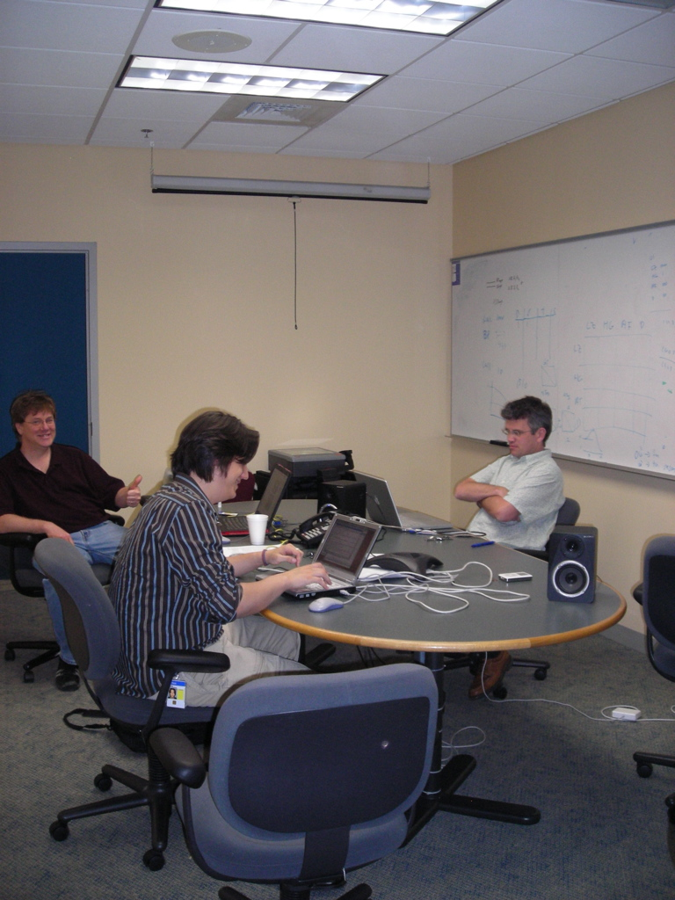

Offices of Music 2.0 - Sun Labs
Sun is a traditional campus environment. We don't have cubicles, we have offices with doors. If you are of a certain level you get an office with a window. There's plenty of 'team space' . Here's a typical Sun office (this is Romain Guy's).

Of course, not all Sun workspaces look so spartan. At the other end of the spectrum is the work space for Arshan. Arshan works in Sun Labs on the Spots team. Arshan has a knack for acquiring cool things for his workspace.

Dual 24" displays, a sound system that could fill a barn in a lab that is filled with other high energy researchers and engineers. A very fun, dynamic workspace (albeit a bit chaotic).
By comparison, our shared space in the east coast is incredibly boring. Here's a shot of the SITM team. We are working together on a paper, so we camped out in this conference room for a few days. Very productive, but very temporary. After this week, we'll all go back to our own offices to sit in the dark alone.
